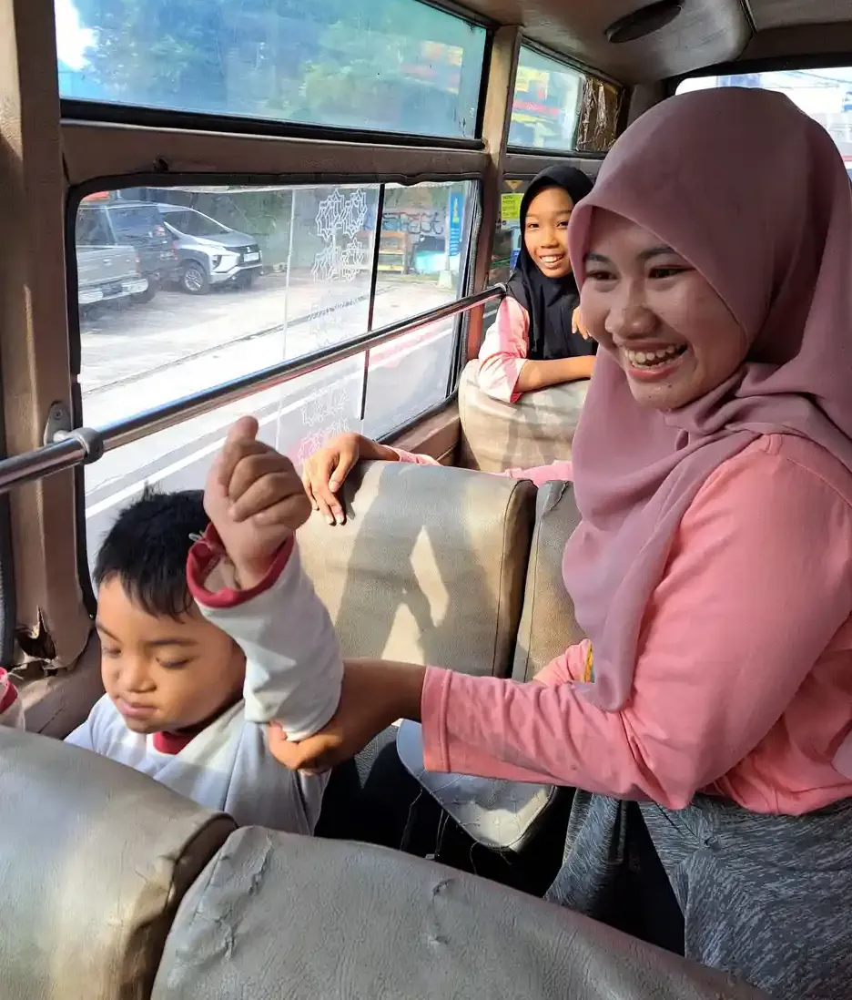
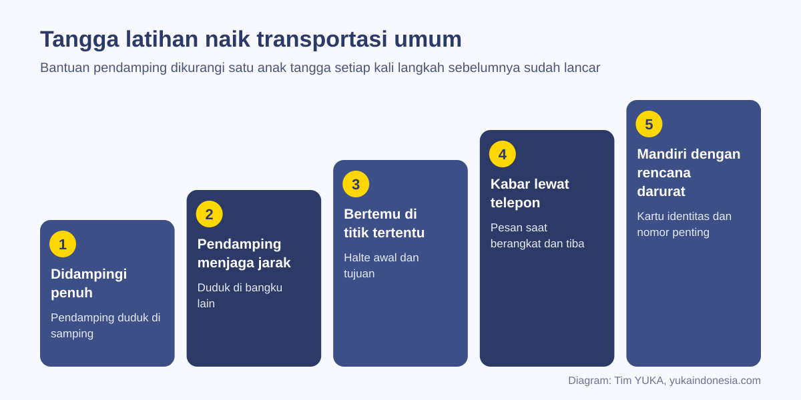
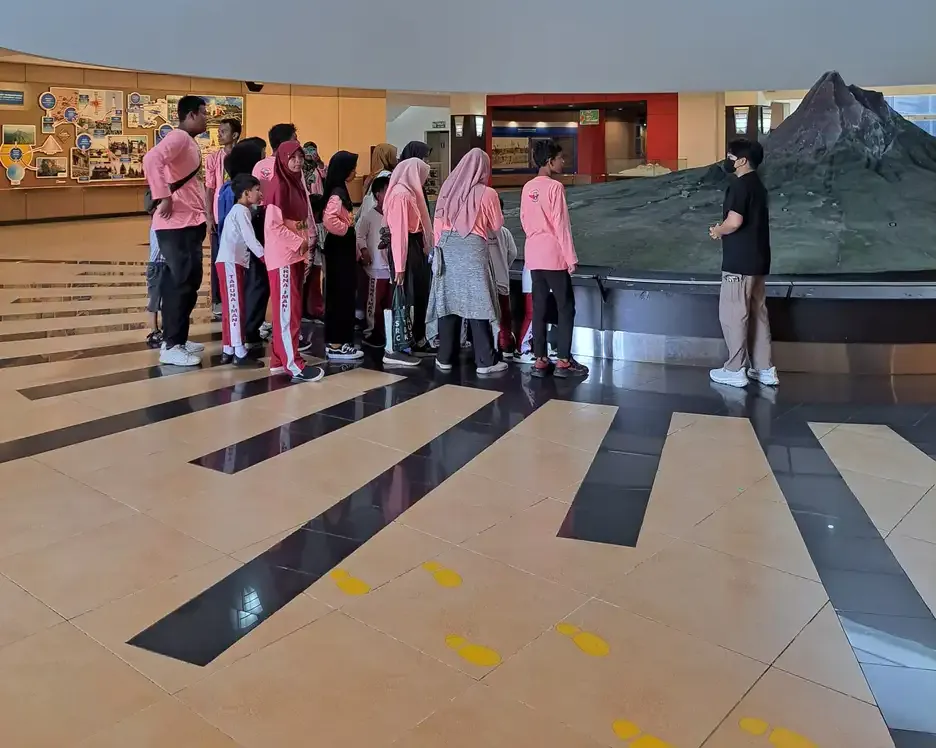

Melatih anak ABK naik transportasi umum dilakukan bertahap: menilai kesiapan, memecah perjalanan menjadi langkah kecil, berlatih berulang di rute nyata, lalu mengurangi pendampingan sedikit demi sedikit. Rencana darurat dan kartu identitas disiapkan sejak awal. Tujuannya kemandirian yang aman, bukan melepas anak sendirian secepatnya.
Bagi banyak remaja, naik bus atau kereta sendiri adalah langkah pertama menuju kemandirian: berangkat sekolah, ke tempat kursus, atau kelak ke tempat kerja tanpa harus diantar. Bagi remaja berkebutuhan khusus, langkah itu sering tertunda bertahun-tahun, bukan karena tidak mampu, tetapi karena belum pernah dilatih secara terencana.
Di banyak negara, latihan semacam ini dikenal sebagai travel training. Panduan ini mengadaptasinya untuk keluarga dan sekolah di Indonesia: kapan anak mulai siap, cara memecah perjalanan menjadi langkah yang bisa diajarkan, tahapan mengurangi pendampingan, rencana darurat, dan hak aksesibilitas transportasi menurut undang-undang. Artikel ini melengkapi pembahasan YUKA tentang hak dan kehidupan penyandang disabilitas.
Penting sebelum membaca
Setiap anak berbeda. Keputusan kapan anak boleh bepergian lebih mandiri sebaiknya diambil bersama keluarga, guru, dan terapis yang mengenal anak, dengan memperhitungkan kondisi kesehatan, kemampuan meminta tolong, dan keamanan rute.
Daftar Isi
Mengapa Latihan Transportasi Umum Penting
Kemampuan bepergian membuka banyak pintu lain. Remaja yang bisa naik angkutan umum lebih mudah mengikuti kegiatan di luar rumah, magang, dan bekerja. Pembahasan tentang supported employment dan pekerjaan untuk penyandang disabilitas di situs ini menunjukkan bahwa transportasi sering menjadi penghambat nyata, bahkan ketika pekerjaannya sudah tersedia.
Bagi keluarga, kemandirian bepergian mengurangi ketergantungan pada antar jemput. Bagi anak, perjalanan memberi kesempatan mempraktikkan banyak keterampilan sekaligus: membaca petunjuk, mengelola uang, berkomunikasi dengan petugas, menunggu, dan mengatur emosi di tempat ramai. Latihan ini sejalan dengan keterampilan hidup lain seperti mengelola uang.
Undang-undang juga memandang kemandirian sebagai hak. UU Nomor 8 Tahun 2016 tentang Penyandang Disabilitas Pasal 23 menyebut hak hidup secara mandiri dan dilibatkan dalam masyarakat, termasuk hak atas mobilitas pribadi dan hak mendapatkan pelatihan serta pendampingan untuk hidup secara mandiri. Latihan bepergian adalah salah satu wujud paling konkret dari hak tersebut.
Menilai Kesiapan Anak Sebelum Mulai
Tidak ada usia pasti kapan anak siap. Yang lebih berguna adalah melihat keterampilan dasar yang sudah dimiliki dan yang masih perlu dilatih. Gunakan tabel berikut sebagai daftar periksa awal, bukan sebagai syarat lulus.
| Keterampilan | Pertanyaan pengamatan | Bila belum bisa |
|---|---|---|
| Keselamatan di jalan | Apakah anak berhenti di tepi jalan dan menyeberang di tempat yang aman? | Latih dulu berjalan kaki di sekitar rumah |
| Identitas diri | Bisakah anak menyebut atau menunjukkan nama, alamat, dan nomor orang tua? | Siapkan kartu identitas dan latih cara menunjukkannya |
| Meminta tolong | Bisakah anak mendekati petugas berseragam dan menyampaikan kebutuhan, termasuk lewat kartu atau aplikasi? | Latih kalimat atau kartu permintaan tolong |
| Menunggu | Bisakah anak menunggu beberapa menit di tempat ramai tanpa pergi? | Latih menunggu dengan pengatur waktu dan aktivitas pengisi |
| Mengenali tanda | Bisakah anak mengenali nomor rute, warna kendaraan, atau nama halte tujuan? | Buat kartu rute bergambar |
| Uang atau kartu | Bisakah anak membayar atau menempelkan kartu tiket? | Latih transaksi di rumah dan di toko dekat rumah |
Pertimbangkan juga kondisi kesehatan. Anak dengan epilepsi, alergi berat, atau kebutuhan obat rutin perlu rencana medis tertulis yang dibicarakan dengan dokter sebelum latihan mandiri. Anak dengan disabilitas sensorik atau disabilitas fisik memerlukan rute yang benar-benar aksesibel, sehingga survei rute menjadi lebih penting.
Memecah Perjalanan Menjadi Langkah Kecil
Perjalanan yang bagi orang dewasa terasa sederhana sebenarnya terdiri dari puluhan langkah. Dalam pendidikan khusus, teknik memecah tugas ini disebut task analysis atau analisis tugas. Setiap langkah diajarkan dan dicatat, sehingga terlihat jelas bagian mana yang sudah dikuasai dan bagian mana yang masih perlu bantuan.
| Tahap perjalanan | Contoh langkah yang diajarkan |
|---|---|
| Persiapan di rumah | Cek jadwal, bawa kartu identitas, ponsel terisi daya, uang atau kartu tiket, pamit dan kirim pesan berangkat |
| Berjalan ke halte | Ikuti rute jalan kaki yang disepakati, menyeberang di tempat aman, tunggu di area halte |
| Naik kendaraan | Kenali nomor atau warna rute, tanya petugas bila ragu, bayar atau tempel kartu, cari tempat duduk atau pegangan |
| Selama perjalanan | Perhatikan penanda jalan atau pengumuman halte, tetap duduk atau berpegangan, jaga barang bawaan |
| Turun | Bersiap satu halte sebelumnya, tunggu kendaraan berhenti penuh, turun dengan hati-hati, cek barang |
| Tiba di tujuan | Jalan ke pintu masuk tujuan, lapor ke orang yang ditunjuk, kirim pesan sudah tiba |
Untuk anak yang terbantu visual, ubah tabel ini menjadi kartu bergambar atau foto langkah demi langkah, mirip dengan jadwal visual untuk anak autis. Foto halte, pintu bus, dan bangunan tujuan yang diambil sendiri biasanya lebih mudah dipahami daripada gambar umum.
Teknik Latihan: Contoh, Bantuan, dan Pengulangan
Teknik yang dipakai sama dengan yang digunakan guru pendidikan khusus untuk mengajarkan keterampilan lain. Pendamping memberi contoh, membantu seperlunya, lalu mengurangi bantuan secara bertahap.
- Memberi contoh. Pendamping memperagakan langkahnya sambil menjelaskan singkat, misalnya "Lihat, ini nomor busnya, sama dengan kartu kita."
- Video sebelum berangkat. Rekaman pendek rute yang akan dilalui membantu anak mengenali tempat sebelum ia berada di sana.
- Bantuan berjenjang. Mulai dari bantuan yang paling ringan yang cukup: isyarat menunjuk, lalu petunjuk lisan, baru bantuan fisik bila perlu.
- Seluruh rangkaian setiap kali. Anak berlatih dari rumah sampai tujuan, bukan hanya potongan tertentu, sehingga ia mengenal alur utuhnya.
- Pengulangan di rute yang sama. Satu rute dikuasai dulu sebelum mencoba rute lain atau jam yang lebih ramai.
Teknologi bisa membantu. Dalam studi kecil oleh Price dan rekan (2018), empat dewasa muda dengan disabilitas intelektual dan perkembangan dilatih memakai aplikasi peta di ponsel untuk naik bus ke berbagai lokasi, dengan metode mengajarkan seluruh rangkaian langkah. Tiga dari empat peserta akhirnya bisa bernavigasi naik bus secara mandiri (Price dkk., 2018). Studinya kecil, jadi anggap sebagai contoh cara, bukan jaminan hasil.
Anak yang belum lancar bicara bisa membawa kartu komunikasi atau memakai aplikasi AAC untuk bertanya kepada petugas, misalnya "Saya mau turun di halte sekolah."

Tangga Pengurangan Pendampingan
Kunci latihan adalah mengurangi pendampingan secara sengaja dan terukur. Setiap anak tangga dipertahankan sampai anak berhasil beberapa kali berturut-turut tanpa kesalahan yang berbahaya, baru naik ke anak tangga berikutnya.

- Didampingi penuh. Pendamping duduk di samping anak dan membimbing setiap langkah.
- Pendamping menjaga jarak. Pendamping duduk di bangku lain dan hanya membantu bila anak benar-benar kesulitan.
- Bertemu di titik tertentu. Pendamping menunggu di halte awal dan halte tujuan, anak menempuh perjalanannya sendiri.
- Kabar lewat telepon. Anak berangkat dan tiba sendiri, mengirim pesan saat berangkat dan saat sampai.
- Mandiri dengan rencana darurat. Anak bepergian sendiri di rute yang sudah dikuasai, dengan kartu identitas dan nomor penting yang selalu dibawa.
Catat setiap perjalanan: tanggal, langkah yang masih dibantu, kesalahan, dan waktu tempuh. Catatan ini membantu keluarga dan guru memutuskan kapan naik tahap dengan alasan yang jelas, bukan perasaan semata. Bila anak mengikuti perencanaan berpusat pada pribadi, target bepergian mandiri bisa dimasukkan sebagai salah satu tujuannya.
Rencana Keamanan dan Situasi Darurat
Kemandirian yang aman bukan berarti tanpa dukungan sama sekali. Rencana darurat disiapkan sejak latihan pertama dan dilatihkan, bukan hanya ditulis.
- Kartu identitas berisi nama, nomor orang tua, dan informasi kesehatan penting, disimpan di tempat yang sama setiap hari. Bagi penyandang disabilitas, UU 8/2016 juga mengenal hak atas kartu penyandang disabilitas.
- Aturan kabar. Pesan singkat saat berangkat, saat berganti kendaraan bila ada, dan saat tiba.
- Kalimat atau kartu minta tolong kepada petugas berseragam, misalnya "Saya tersesat, tolong hubungi nomor ini."
- Latihan skenario. Apa yang dilakukan bila salah naik kendaraan, kelewatan halte, ponsel mati, merasa tidak enak badan, atau didekati orang asing yang memaksa.
- Titik aman. Tempat yang disepakati untuk menunggu bila bingung, seperti pos petugas atau loket.
Anak yang mudah kewalahan oleh keramaian perlu strategi menenangkan diri yang sudah dilatih, misalnya penutup telinga atau hitungan napas. Bila anak mudah pergi tanpa pamit, rencana keamanan perlu disusun lebih ketat bersama tenaga profesional sebelum latihan mandiri dimulai.
Hak Aksesibilitas Transportasi bagi Penyandang Disabilitas
Latihan anak hanyalah satu sisi. Sisi lainnya adalah kewajiban penyelenggara transportasi untuk menyediakan layanan yang bisa diakses. Beberapa ketentuan dalam UU 8/2016 yang relevan:
- Pasal 18: hak aksesibilitas meliputi hak mendapatkan aksesibilitas untuk memanfaatkan fasilitas publik dan mendapatkan akomodasi yang layak.
- Pasal 19: hak pelayanan publik meliputi akomodasi yang layak serta pendampingan, penerjemahan, dan fasilitas yang mudah diakses di tempat layanan publik tanpa tambahan biaya.
- Pasal 105 ayat (2): pelayanan publik yang wajib mudah diakses termasuk pelayanan jasa transportasi publik.
- Pasal 107 ayat (1): jasa transportasi tersebut mencakup transportasi darat, kereta api, laut, dan udara.
Di tingkat kementerian, Peraturan Menteri Perhubungan Nomor PM 98 Tahun 2017 mengatur penyediaan aksesibilitas pada pelayanan jasa transportasi publik bagi pengguna jasa berkebutuhan khusus. Dalam praktik, ketersediaan fasilitas berbeda-beda antarkota dan antaroperator, sehingga survei rute tetap diperlukan.
Mengajarkan anak tentang haknya juga bagian dari latihan. Anak boleh meminta kursi prioritas, bertanya kepada petugas, dan meminta bantuan naik atau turun. Ringkasan hak anak berkebutuhan khusus yang lebih luas ada di artikel apa saja hak anak berkebutuhan khusus.
Peran Sekolah, Keluarga, dan Petugas
Latihan berjalan paling baik bila semua pihak memakai cara yang sama. Sekolah bisa memasukkan keterampilan bepergian ke dalam program keterampilan hidup dan kegiatan luar kelas. Keluarga melanjutkan latihan di rute harian seperti ke sekolah atau ke rumah nenek. Pertemuan berkala memastikan tahap pendampingan yang dipakai di sekolah dan di rumah sama.
Petugas transportasi juga mitra. Bila memungkinkan, perkenalkan anak kepada petugas di halte atau stasiun yang rutin dilalui, dan jelaskan secara singkat cara terbaik berkomunikasi dengannya. Untuk anak dengan gangguan pendengaran, cara berkomunikasi yang efektif dibahas di artikel cara berkomunikasi dengan anak tunarungu.
Kisah kemandirian alumni sering menjadi penyemangat. Salah satunya dapat dibaca di kisah Mas Ilham yang mandiri lewat usaha telur asin. Kemandirian bepergian adalah salah satu fondasi agar cerita seperti ini bisa terjadi.

Kesalahan yang Sering Terjadi
Beberapa kesalahan membuat latihan berhenti di tengah jalan:
- Melompati tahap. Anak yang lancar dua kali ditemani langsung dilepas sendiri. Satu pengalaman buruk bisa membuatnya takut berbulan-bulan.
- Hanya berlatih di jam sepi. Kondisi nyata di jam berangkat sekolah berbeda. Latih bertahap ke jam yang lebih ramai.
- Tidak menyiapkan perubahan. Halte pindah, jalan ditutup, atau jadwal berubah. Latih juga apa yang dilakukan saat rencana tidak berjalan.
- Terlalu protektif. Pendamping yang selalu mengambil alih membuat anak tidak pernah berlatih mengambil keputusan.
- Menganggap latihan selesai. Keterampilan perlu dipertahankan. Tinjau ulang setiap kali ada perubahan rute, sekolah, atau kondisi anak.
Latihan transportasi adalah perjalanan panjang. Ada anak yang butuh beberapa minggu, ada yang butuh berbulan-bulan untuk satu rute. Keduanya wajar. Yang penting, setiap langkah kecil yang dikuasai menambah ruang gerak anak di dunia yang lebih luas.
Pendampingan di YUKA
Siswa Sekolah Inklusi Taruna Imani rutin mengikuti kegiatan di luar sekolah, dari kunjungan museum sampai candi, termasuk perjalanan bersama dengan bus. Orang tua yang ingin berdiskusi tentang cara melatih kemandirian anak di rumah dan di jalan dapat menghubungi tim YUKA lewat WhatsApp.
Pertanyaan yang Sering Diajukan
Bagaimana cara melatih anak ABK naik transportasi umum?
Lakukan bertahap: nilai kesiapan, pecah perjalanan menjadi langkah kecil, berlatih berulang di rute nyata dengan contoh dan bantuan, lalu kurangi pendampingan setahap demi setahap. Siapkan kartu identitas dan rencana darurat sejak awal.
Pada usia berapa anak berkebutuhan khusus bisa naik angkutan umum sendiri?
Tidak ada usia pasti. Yang menentukan adalah keterampilan seperti keselamatan di jalan, kemampuan meminta tolong, menunggu, dan mengenali rute, serta kondisi kesehatan anak. Keputusan sebaiknya diambil bersama keluarga, guru, dan terapis.
Apa itu travel training?
Travel training adalah latihan terencana untuk mengajarkan seseorang, termasuk anak dan remaja berkebutuhan khusus, menempuh rute tertentu dengan transportasi umum secara aman dan mandiri. Latihannya memakai analisis tugas, contoh, bantuan berjenjang, dan pengurangan pendampingan.
Apa yang harus dibawa anak saat latihan naik bus?
Kartu identitas berisi nama, nomor orang tua, dan informasi kesehatan penting, ponsel yang terisi daya, uang atau kartu tiket, kartu rute bergambar, dan kartu minta tolong bila anak belum lancar bicara.
Apa hak penyandang disabilitas dalam transportasi umum?
UU 8/2016 menjamin hak aksesibilitas dan pelayanan publik, termasuk akomodasi yang layak dan pendampingan tanpa tambahan biaya. Pasal 105 dan 107 menegaskan pelayanan jasa transportasi publik darat, kereta api, laut, dan udara wajib mudah diakses.
Apa isi Permenhub PM 98 Tahun 2017?
Peraturan Menteri Perhubungan Nomor PM 98 Tahun 2017 mengatur penyediaan aksesibilitas pada pelayanan jasa transportasi publik bagi pengguna jasa berkebutuhan khusus. Peraturan ini berlaku sejak 4 Oktober 2017.
Bagaimana jika anak tersesat atau salah naik kendaraan?
Latih skenario ini sebelumnya: tetap tenang, turun di tempat aman, mendekati petugas berseragam, menunjukkan kartu minta tolong, dan menghubungi nomor orang tua. Sepakati juga titik aman untuk menunggu.
Kapan pendampingan boleh dikurangi?
Setelah anak berhasil menempuh rute di tahap yang sama beberapa kali berturut-turut tanpa kesalahan yang berbahaya. Catatan perjalanan membantu memutuskannya dengan alasan yang jelas, dan pendampingan bisa ditambah lagi bila ada perubahan rute.
Bacaan Terkait
Bacaan lain tentang kemandirian dan hak penyandang disabilitas:
Sumber dan Referensi
- Undang-Undang Nomor 8 Tahun 2016 tentang Penyandang Disabilitas (JDIH BPK): Pasal 18, 19, 23, 105, 107
- Peraturan Menteri Perhubungan Nomor PM 98 Tahun 2017 tentang Penyediaan Aksesibilitas pada Pelayanan Jasa Transportasi Publik bagi Pengguna Jasa Berkebutuhan Khusus (JDIH BPK)
- Price R, Marsh AJ, Fisher MH. Teaching Young Adults with Intellectual and Developmental Disabilities Community-Based Navigation Skills to Take Public Transportation. Behavior Analysis in Practice, 2018
Catatan: Artikel ini bersifat edukasi umum dan bukan pengganti saran psikolog, guru pendidikan khusus, dokter, atau tenaga profesional lain. Sumber diperiksa tim YUKA pada 5 Oktober 2026.